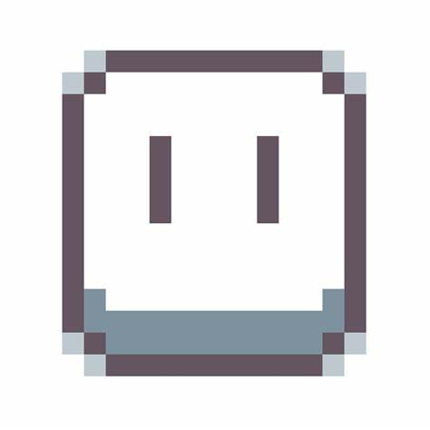
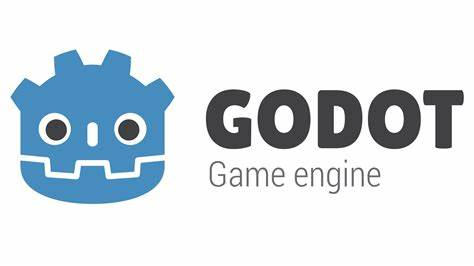

Programas utilizados
Aseprite

Aseprite es una herramienta de software diseñada para la creación y edición de gráficos pixelados y animaciones. Es popular entre diseñadores de videojuegos, artistas de píxeles y cualquier persona que trabaje con gráficos de baja resolución. Algunas de sus características destacadas incluyen:
-
Edición de píxeles: Permite crear y editar gráficos pixelados con precisión.
-
Animación: Facilita la creación de animaciones en píxeles, con soporte para capas y marcos de animación.
-
Paletas de colores: Ofrece herramientas para gestionar y aplicar paletas de colores.
-
Interfaz amigable: Su interfaz está diseñada para ser intuitiva y fácil de usar, con herramientas específicas para el trabajo con píxeles.
Es una herramienta bastante versátil y se utiliza tanto para la creación de arte estático como dinámico en el ámbito del diseño de juegos y el arte retro.
Godot

Godot es un motor de desarrollo de juegos de código abierto y gratuito que permite a los desarrolladores crear videojuegos en 2D y 3D. Su flexibilidad y la amplitud de sus características lo han convertido en una opción popular entre desarrolladores de todos los niveles. Algunas de las principales características de Godot incluyen:
-
Multiplataforma: Puedes desarrollar juegos para una variedad de plataformas, incluyendo Windows, macOS, Linux, Android, iOS y más.
-
Lenguajes de programación: Soporta varios lenguajes de programación, como GDScript (un lenguaje de scripting propio de Godot), C#, y C++.
-
Sistema de nodos: Utiliza un sistema basado en nodos que facilita la organización y el desarrollo de escenas y objetos dentro del juego.
-
Editor visual: Ofrece un editor de escenas visual que permite diseñar y organizar elementos del juego de manera intuitiva.
-
Herramientas de animación: Incluye potentes herramientas para animar personajes y otros elementos del juego.